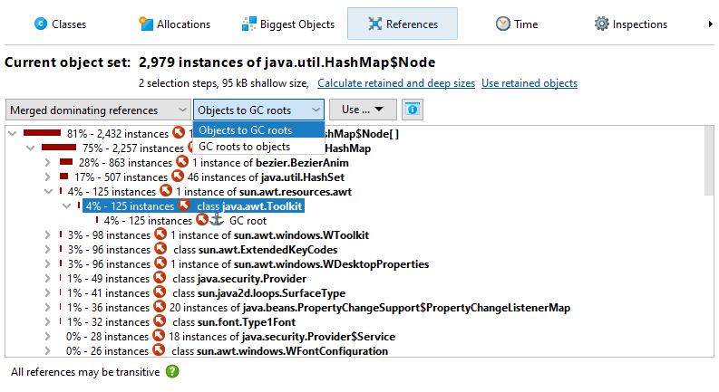

Distinguishing regular memory usage from a memory leak is often not quite simple. However, both excessive memory usage and memory leaks have the same symptoms and so they can be analyzed in the same way. The analysis proceeds in two steps: Locating suspicious objects and finding out why those objects are still on the heap.
Finding new objects
When an application with a memory leak is running, it consumes more and more memory over time. Detecting the growth of memory usage is best done with the VM telemetries and the differencing functionality in the "All objects" and the "Recorded objects" views. With these views you can determine if you have a problem and how severe it is. Sometimes, the difference column in the instance tables already gives you an idea what the problem is.
Any deeper analysis of a memory leak requires the functionality in the heap walker. To investigate a memory leak around a particular use case in detail, the "Mark heap" functionality is best suited. It allows you to identify new objects that have remained on the heap since a particular previous point in time. For these objects, you have to check whether they are still legitimately on the heap or if a faulty reference keeps them alive even though the object serves no further purpose.
Another way to isolate a set of objects that you are interested in is through allocation recording. When taking a heap snapshot, you have the option to show all recorded objects. However, you may not want to limit allocation recording to just a particular use case. Also, allocation recording has a high overhead, so the Mark Heap action will have a comparatively much smaller impact. Finally, the heap walker lets you select old and new objects at any selection step with the Use new and Use old hyperlinks in the header if you have marked the heap.

Analyzing the biggest objects
If a memory leak fills up the available heap, it will dwarf other types of memory usage in the profiled application. In that case, you don't have to examine new objects, but simply analyze what objects are most important.
Memory leaks can have a very slow rate and may not become dominant for a long time. Profiling such a memory leak
until it becomes visible may not not practicable. With the built-in facility in the JVM to automatically
save an HPROF snapshot when an
OutOfMemoryError is thrown, you can get a snapshot where the memory leak is more important
than the regular memory consumption. In fact, it's a good idea to always add
-XX:+HeapDumpOnOutOfMemoryError
to the VM parameters or production systems so you have a way to analyze memory leaks that may be hard to reproduce in development environments.
If the memory leak is dominant, the top objects in the "Biggest objects" view of the heap walker will contain the memory that was retained by mistake. While the biggest objects themselves may be legitimate objects, opening their dominator trees will lead to the leaked objects. In simple situations, there is a single object that will contain most of the heap. For example, if a map is used to cache objects and that cache is never cleared, then the map will show up in the dominator tree of the biggest object.
Finding strong references chains from garbage collector roots
An object can only be a problem if it is strongly referenced. "Strongly referenced", means that there is at least one chain of references from a garbage collector root to the object. "Garbage collector" roots (in short GC roots) are special references in the JVM that the garbage collector knows about.
To find a reference chain from a GC root, you can use the Show Path To GC Root actions in the "Incoming references" view or in the heap walker graph. Such reference chains may by very long in practice, so they can generally be interpreted more easily in the "Incoming references" view. The references point from the bottom towards the object at the top level. Only the reference chains that are the result of the search are expanded, other references on the same levels are not visible until a node is closed and opened again or the Show All Incoming References action in the context menu is invoked.
To get an explanation for types of GC roots and other terms that are used in the reference nodes, use the tree legend.
When you select nodes in the tree, the non-modal tree legend highlights all used icons and terms in the selected node. Clicking on a row in the dialog will show an explanation at the bottom.
Important types of garbage collector roots are references from the stack, references created by native code through JNI and resources like live threads and object monitors that are currently being used. In addition, the JVM adds in a couple of "sticky" references to keep important systems in place.
Classes and classloaders have a special circular reference scheme. Classes are garbage collected together with their classloader when
- no class loaded by that classloader has any live instances
- the classloader itself is unreferenced except by its classes
-
none of the
java.lang.Classobjects are referenced except in the context of the classloader

In most circumstances, classes are the last step on the path to the GC root that you are interested in. Classes are not GC roots by themselves. However, in all situations where no custom classloaders are used, it is appropriate to treat them as such. This is JProfiler's default mode when searching for garbage collector roots, but you can change it in the path to root options dialog.
If you have problems interpreting the shortest path to a GC root, you can search for additional paths. Searching for all paths to GC roots is not recommended in general because it can produce a large number of paths.
In contrast to the live memory views, the heap walker never shows unreferenced objects. However, the heap walker may not only show strongly referenced objects. By default, the heap walker also retains objects that are only referenced by soft references, but eliminates objects that are only referenced by weak, phantom or finalizer references. Because soft references are not garbage collected unless the heap is exhausted, they are included because otherwise you might not be able to explain large heap usages. In the options dialog which is shown when you take a heap snapshot, you can adjust this behavior.
Having weakly referenced objects in the heap walker may be interesting for debugging purposes. If you want to remove weakly referenced objects later on, you can use the "Remove objects retained by weak references" inspection.
When searching for paths to GC roots, the reference types that were selected to retain objects in the heap walker options dialog are taken into account. In that way, the path to GC root search can always explain why an object was retained in the heap walker. In the options dialog for the path to GC root search you can widen the acceptable reference types to all weak references.
Eliminating entire object sets
Until now we have only looked at single objects. Often you will have many objects of the same type that are part of a memory leak. In many cases, the analysis of a single object will also be valid for the other objects in the current object set. For the more general case where the objects of interest are referenced in different ways, the "Merged dominating references" view will help you to find out which references are responsible for holding the current object set on the heap.

Each node in the dominating reference tree tells you how many objects in the current object set will be eligible for garbage collection if you eliminate that reference. Objects that are referenced by multiple garbage collector roots may not have any dominating incoming reference, so the view may only help you with a fraction of the objects, or it may even be empty. In that case, you have to use the merged incoming reference view and eliminate garbage collector roots one by one.